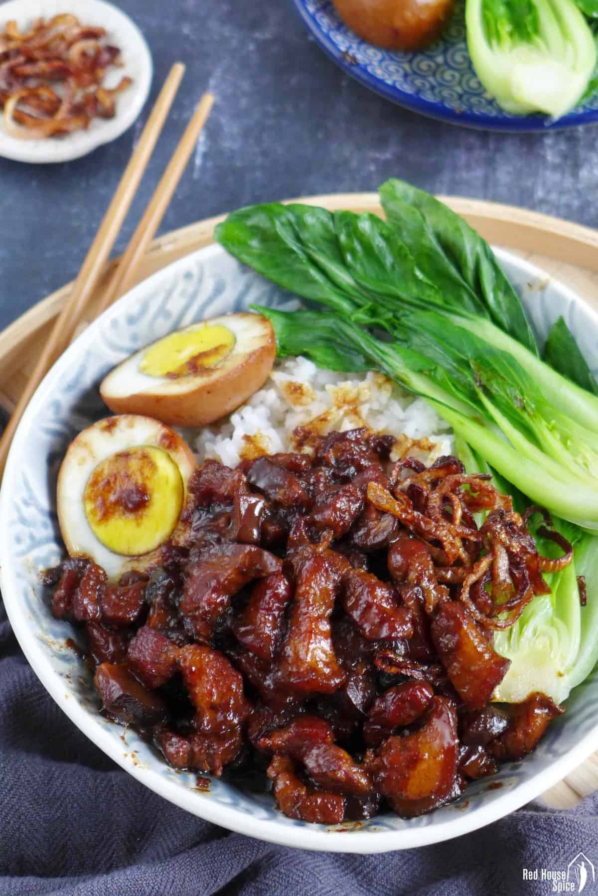

Pork Sauce
Ingredients:
- 1 lb skin-on pork belly
- 2 teaspoons oil
- 0.9 oz. rock sugar
- 1 small onion or a couple of shallots
- 8 shiitake mushrooms
- 1/4 cup shaoxing wine
- 3 tablespoons light soy sauce
- 2 tablespoons dark soy sauce
- 2 cups water
- 4 hardboiled eggs
Steps
- Bring a medium pot of water to a boil (enough so that the pork belly will be fully submerged), and blanch the chopped pork belly for 1 minute. Drain, rinse clean of any scum, and set aside.
Heat the oil in a wok over low heat, and add the rock sugar (or granulated sugar). Cook the sugar until it starts to melt and then add the onions or shallots. Turn up the heat to medium high and stir-fry for 1 minute. Add the shiitake mushrooms and stir-fry for another couple minutes.
- Add the blanched pork, shaoxing wine, light soy sauce, dark soy sauce, and water.
- Stir and bring the mixture to a boil. Once boiling, add the spice packet, along with the peeled hardboiled eggs and turn the heat to the lowest setting. Simmer for 1 1/2 hours, stirring occasionally to prevent sticking.

More Recipes here
3 Cup Chicken
Popcorn Chicken